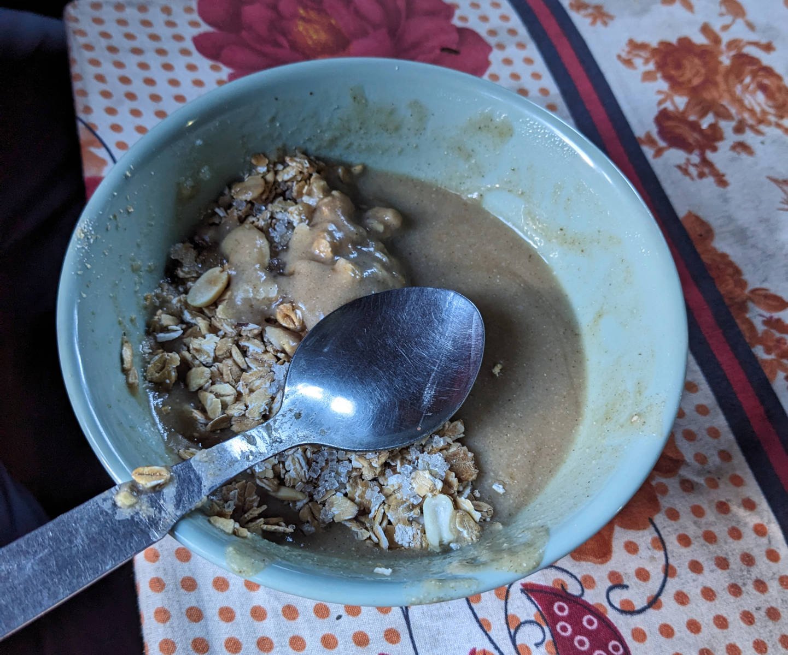
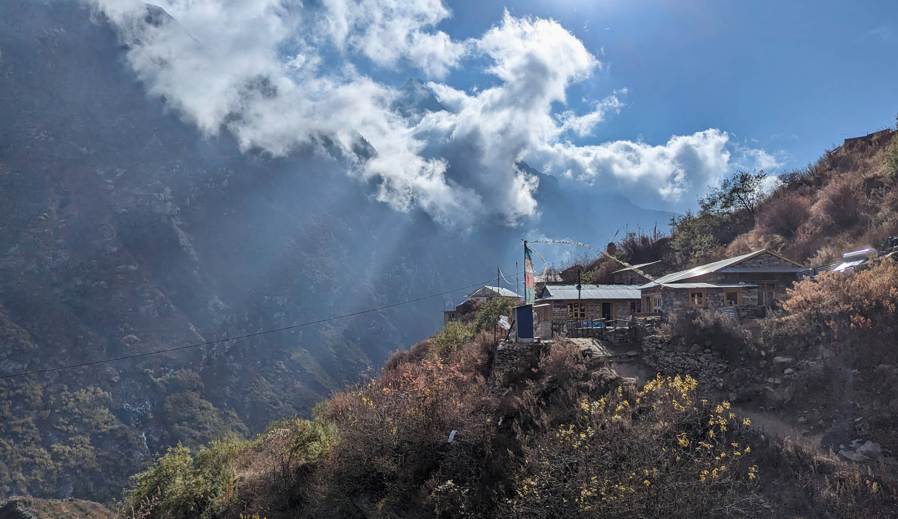

“Give me yak shit”. Not a sentence I expected to ever be said to me, but now it happened I should probably just comply. I lean over, grable inside the big bag of yak dung next to me, and hand over a few dried brittle plaques, each about as big as my head. Those yaks know how to poop! These domesticated oxes are not that big and seem to consist mainly of hair, but that doesn’t seem to get in the way of their digestive system. We’ve seen them on the trail, and also people collecting their dung and putting them on rocks and roof tops to dry. It’s November in Nepal, a period known for its dry weather. We now know what the dried dung is being used for, fuel.


